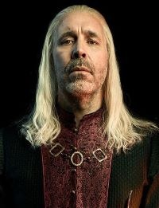

Viserys I Targaryen
Defende Lucerys no salão e tenta reunir a família no jantar. Morre naquela noite.
Conteúdo até a temporada 1, episódio 10.
Ver Mapa de Conexões →Temporada 1
Acompanhe os acontecimentos registrados até o episódio escolhido.
Episódio 01 — The Heirs of the Dragon
Rei de Westeros, escolhido no Grande Conselho de Harrenhal. Busca preservar a unidade da família e do reino.
Episódio 02 — The Rogue Prince
Corlys denuncia os ataques da Triarquia às rotas marítimas. Viserys evita precipitar uma guerra.
Episódio 03 — Second of His Name
A corte celebra o segundo aniversário do filho de Alicent. Muitos já tratam o menino como futuro rei, apesar da nomeação de Rhaenyra.
Episódio 04 — King of the Narrow Sea
Daemon retorna com uma coroa conquistada nos Degraus e a entrega a Viserys. A reconciliação parece possível.
Episódio 05 — We Light the Way
Rhaenyra e Laenor aceitam o dever dinástico e combinam preservar suas vidas íntimas. Viserys negocia com Corlys a futura sucessão.
Episódio 07 — Driftmark
Alicent exige reparação pela mutilação do filho. Tenta atingir Lucerys com a adaga de Viserys e fere o braço de Rhaenyra durante o confronto.
Episódio 08 — The Lord of the Tides
Defende Lucerys no salão e tenta reunir a família no jantar. Morre naquela noite.
Personagens relacionados
- Rhaenyra TargaryenPai e filha
- Daemon TargaryenIrmãos
- Aemma ArrynCasados; Aemma morre no ep. 1
- Alicent HightowerCasamento anunciado
- Aegon TargaryenPai e filho
- Aemond TargaryenPai e descendente
- Helaena TargaryenPai e descendente
- BalerionÚltimo cavaleiro, no passado